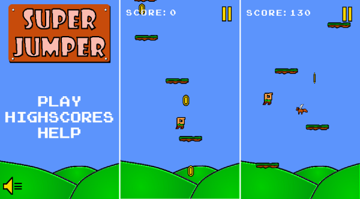
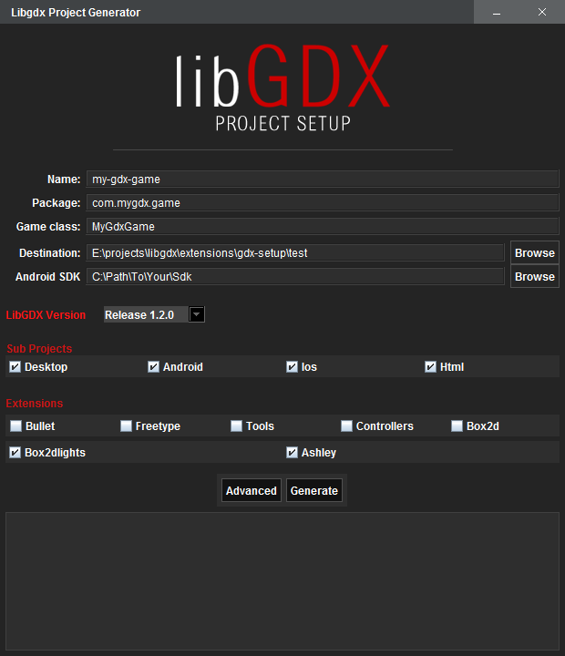

Aug 9, 2014 · 1 minute read · Comments
Games developmentProjects

Ashley now has a logo and it’s awesome! What an amazing contribution.
This is really good news because Ashley lacked an image to make it a bit more memorable. Now back to work, there will soon be a new release. Despite it involving some API changes, it will make for a much faster framework.
Jul 29, 2014 · 1 minute read · Comments
Games developmentProjects
Ashley, your favourite entity framework now has online javadocs and a wiki.
Wooohooo!
The javadocs correspond to the latest repository snapshot. Our Jenkins instance grabs the code, runs the tests, builds the jars and publishes the javadocs to the badlogic.com server. Kudos to Mario for the setup.
I just started putting stuff into the wiki yesterday so it’s pretty empty as of now. Expect more content soon!
Jul 27, 2014 · 1 minute read · Comments
General

Ashley Super Jumper has been my weekend project. It is nothing more than a clone of the Libgdx demo game. The catch is that it goes for an entity system approach rather than the classic inheritance model. Naturally, it uses Ashley.
The point was to have a reference project folks could check out in order to understand how entity systems in general and Ashley in particular work.
Maybe one day, I’ll post a proper article explaining the design behind the entity systems at play in Super Jumper. I guess that could be useful.
Jul 22, 2014 · 1 minute read · Comments
Games development

Last night I added Ashley support to the official Libgdx setup tool. Creating Libgdx projects that use Ashley entity framework is now even easier. Simply make sure you tick the Ashley checkbox before generating your project.
By the way, if you already have a a project, adding the extra dependency is also trivial.
- Core project:
com.badlogicgames.ashley:ashley:1.0.1
- Android project:
com.badlogicgames.ashley:ashley:1.0.1
- GWT project:
com.badlogicgames.ashley:ashley:1.0.1:sources
Remember that using Ashley in non Libgdx projects is also perfectly fine.
Jul 21, 2014 · 2 minute read · Comments
General
This blog is now a lustrum old. A few days ago I received the yearly invoice from the hosting company, curiosity kicked in and made me check the date for the first one. I was surprised to see it’s from July 2009 and thought a recap was in order.
It might have been possible to say that 5 years can make a blog be referred to as veteran. If we were in 2010. That is no longer the case. There are many blogs out there that have been delivering high quality content for over 10 years now (and beyond). However, I believe that having kept doing this all this time is something one can be proud of.
In absolute terms, the numbers are far from impressive, although they mean a lot to me. There’s some really awesome content out there, why would people spend some of their valuable time reading this? This blog has had over 300K hits! Add it to the list of unsolved mysteries. I’ve posted 235 entries, which, to be fair, it isn’t that much considering we’re talking about a 5 year span. There’s an average of 3.75 comments per entry, not a lot but decent given that a lot of the discussion has moved to social networks like Twitter.
Embarrassingly, I started writing in Spanish about films, TV shows and concerts with the assertiveness of a true connoisseur. Past me was clearly a fool. In 2010, the topic started shifting towards technology and computery stuff. Once I moved to the UK in September 2011, all articles were in English and I’d only write about programming and games development.
Currently, the most popular articles in English are:
Well, hopefully, I’ll be able to keep doing this for a lot longer.